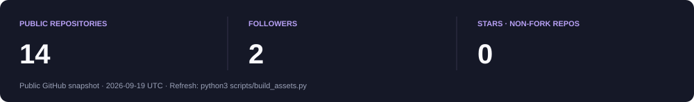

Animated profile preview · GitHub-rendered Markdown with an approximate dark stylesheet
|
|
Hi, I'm Mahid.
CSE undergraduate exploring how intelligent systems work.
I study at East West University and learn by building: machine-learning notebooks, computer-vision experiments and interactive data dashboards.
I like turning a concept into code, testing its limits, and explaining what I learn along the way.
|
Focus ·
Projects ·
Toolkit ·
Snake ·
GitHub ·
Connect
Focus
01 / Machine & Deep Learning
Supervised and unsupervised learning, ensembles, optimisation, neural networks and model evaluation.
|
02 / Computer Vision
Image filtering, transforms, feature extraction and CNN-based visual representations.
|
03 / Data Science
Data cleaning, exploratory analysis, feature engineering, visualisation and interactive dashboards.
|
04 / Algorithms
Data structures, complexity analysis and competitive programming on Codeforces and LeetCode.
|
Projects
A selection of my learning journeys, coursework and practical experiments.
|
DEEP LEARNING · LEARNING IN PUBLIC
Daily notebooks exploring neural-network architectures, training loops and experiments.
Python Jupyter Colab
|
MACHINE LEARNING · LEARNING IN PUBLIC
Machine-learning theory and practical implementations, explored one concept at a time.
Python scikit-learn Jupyter
|
|
DATA ANALYSIS · INTERACTIVE APP
An interactive dashboard for exploring workload and mental-health-related data through analysis and visualisation.
Python Streamlit pandas
|
DATA ANALYSIS · EXPLORATION
Exploratory analysis of loan data, using distributions and visualisations to understand patterns.
Python pandas Jupyter
|
|
COMPUTER VISION · CSE438
Image-processing implementations, experiments, reports and visualisations from my university coursework.
Python OpenCV Jupyter
|
MACHINE LEARNING · CSE475
Lab work covering supervised and unsupervised learning, ensembles, optimisation and neural networks.
Python scikit-learn Jupyter
|
Explore all repositories →
Toolkit
University coursework
- CSE475: Machine Learning
- CSE438: Digital Image Processing
- CSE412: Software Engineering
Contribution snake
GitHub snapshot

Repositories and recent updates · Contribution activity
Problem solving
I practise algorithms and data structures to strengthen the reasoning behind the code.
Think → Implement → Test → Understand
Connect
Let's talk about AI, machine learning, computer vision, data science or software development.
Message me on LinkedIn · Explore my GitHub
For a question about a project, open an issue in that repository.